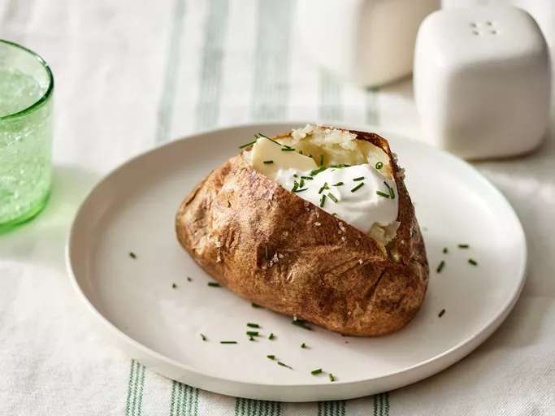

The Most Delicious Baked Potato
A baked potato in the air fryer comes out beautifully crusty on the outside and light and fluffy on the inside, just what a great baked potato should be! Serve them with your favorite toppings, like sour cream, butter, or chives.
Ingredients
- 2 large russet potatoes, scrubbed
- 1 tablespoon peanut oil
- ½ teaspoon coarse sea salt
Steps
- Gather all ingredients and preheat an air fryer to 400 degrees F (200 degrees C).
- Brush potatoes with peanut oil, sprinkle with salt, and place them in the air fryer basket.
- Cook potatoes until very tender when pierced with a fork, about 1 hour. Serve and enjoy!